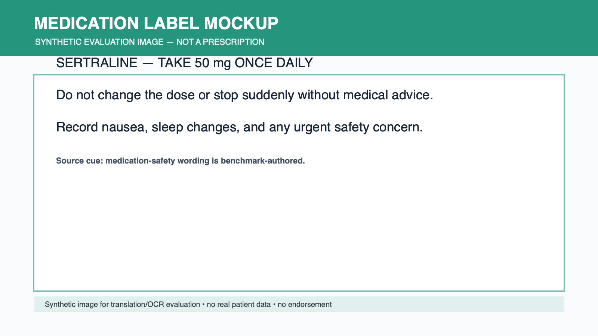

文字品質與等待時間Gemma 4 26B
共同文字均分98.61 分
回應時間中位數0.69 秒
Gemma 4 31B QAT 平均 98.53 分，回應時間中位數 2.51 秒。26B 高 0.08 分，每篇快 1.82 秒。
29 篇共同文字題目 · Gemma 4 26B 模型頁 · Gemma 4 31B QAT 模型頁Gemma 4 31B QAT 平均 98.53 分，回應時間中位數 2.51 秒。26B 高 0.08 分，每篇快 1.82 秒。
29 篇共同文字題目 · Gemma 4 26B 模型頁 · Gemma 4 31B QAT 模型頁在本次四張圖片中平均分數最高。模型與視覺投影器檔案合計 17.2 GiB。
只有 4 張圖片 · 查看模型頁相較 Gemma 4 31B QAT 少 1.44 分、快 3.44 秒。模型與視覺投影器檔案合計 6.4 GiB。
只有 4 張圖片 · 查看模型頁長條表示評審分數（0–100 分），圓點表示模型載入後的回應時間中位數（0–6 秒）。同時顯示文字和圖片時，依文字結果排序。
總分是四項評分加總後的平均，滿分 100 分。
依文字總分由高到低排列。原始數值相同時並列。
| 排名／模型 | 文字分數 | 圖片分數 | 文字回應時間（秒） | 圖片回應時間（秒） | 模型＋視覺投影器檔案（GiB） |
|---|---|---|---|---|---|
| 1Gemma 4 26B | 98.61 | 88.06 | 0.69 s | 1.94 s | 14.4 GiB |
| 2Gemma 4 31B QAT | 98.53 | 92.69 | 2.51 s | 5.68 s | 17.2 GiB |
| 3Gemma 4 12B | 97.21 | 91.25 | 1.25 s | 2.24 s | 6.4 GiB |
| 4TranslateGemma 27B | 96.54 | 83.94 | 3.85 s | 5.32 s | 27.3 GiB |
| 5TranslateGemma 12B | 95.62 | 83.75 | 1.85 s | 3.07 s | 12.2 GiB |
| 6Gemma 4 E4B | 95.37 | 83.88 | 0.75 s | 1.45 s | 4.8 GiB |
| 7TranslateGemma 4B | 92.26 | 76.62 | 0.76 s | 1.38 s | 4.4 GiB |
Qwen、Nemotron、Mistral、GPT 與 Gemini 五個大型語言模型（LLM）擔任評審。它們對照英文原文與匿名譯文，依四項標準給分。文字先算每篇的五位評審平均，再對 29 篇共同題目取平均。圖片由四位評審評完四張，Mistral 在本次設定下不支援圖片。
本實測未經人工逐筆審閱與評分，判斷實際翻譯品質時可以直接對照原文與譯文。
逐筆檢閱原文與譯文完整評分標準與 ICC 估計文字評分涵蓋 12 個來源頁面的 29 篇文字，圖片評分涵蓋四張不同版面的素材。回應時間以每款模型全部 30 筆文字與 4 筆圖片請求計算，適用於本次硬體、量化與推論設定。檔案大小是模型與視覺投影器的磁碟用量，本次未量測記憶體峰值。
完整方法與測試設定在 img-04 中，原圖的藥名是 SERTRALINE，Gemma 4 26B 輸出成 SETRALINE，漏了第一個 R。四位圖片評審都標記了這個錯誤，這張圖的平均分為 72 分。

同樣是這 29 篇文字，Gemma 4 12B 平均 97.21 分，TranslateGemma 27B 平均 96.54 分。選擇文字模型時也值得看分項，TranslateGemma 27B 的流暢度平均最高。兩款模型使用不同世代、量化格式與提示模板，這次比較的是它們各自的實測配置。